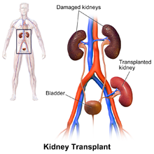
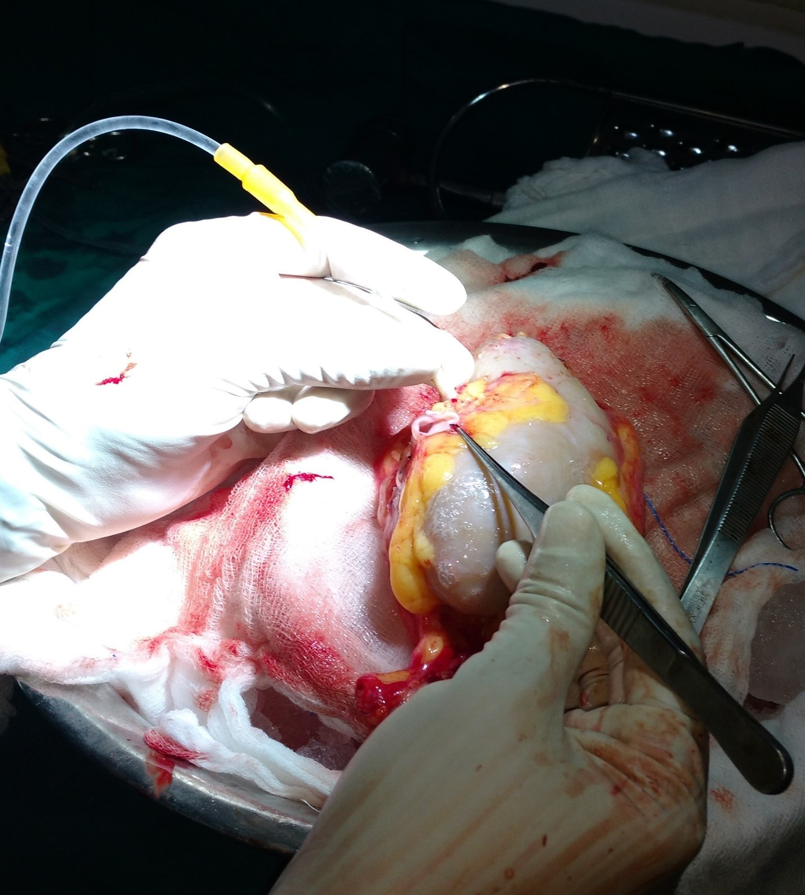

RENAL TRANSPLANTATION
TAMILNADU GOVERNMENT APROVED CENTRE
Inspite of proper treatment many patients may reach end stage kidney failure due to a number of reasons. Certain diseases progress to end stage even if adequate treatment has been given. Patients may have been taking irregular incomplete treatment. Some patients who are on long term haemodialysis may have opted for transplantation but may not find proper donor as per norms. As per Government rules only a close first line relatives are eligible to donate on of their kidneys on compassionate grounds. Very special infra structure facilities which are needed for carrying out renal transplantation are available at SB Hospital. Special tests (tissue crossmatching) to determine whether the patient’s body will accept the donor’s kidney or not need to be done. Tests for assessing the fitness of all other organs such as lungs, heart, liver et., for the patient to undergo such a major surgical procedure especially when such patients requiring transplant are in a seriously ill condition. Each time when a patient wants transplantation of a kidney, the donor and the recipient (one who receives the donated kidney) have to appear before an appropriate approval committee at Chennai with relevant investigation reports. Hence it takes time for all these procedures to be completed, those who are already on dialysis treatment and desirous of having a transplantation should undergo all the required investigations at the appropriate time and get checked to find out whether they are fit for the procedure and get the necessary documents to present before the approval committee.
At present, SB hospital is the only Hospital in Thanjavur approved by the Tamil Nadu Government for Renal Transplantation. Presently Live Renal Transplantations are being done regularly and successfully in our centre. Cadaveric transplantation will start soon. SB Hospital has been equipped with two Transplant Oriented ICU & Special Post Operative Ward for Transplant Patients.

Kidney Perfusion Picture
